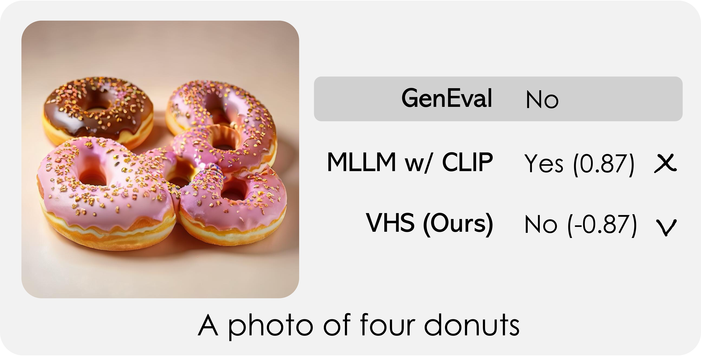
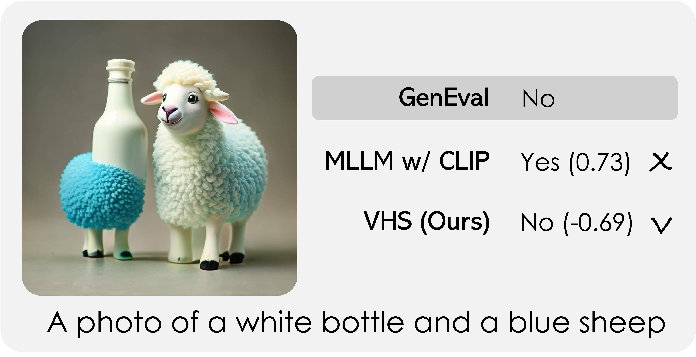
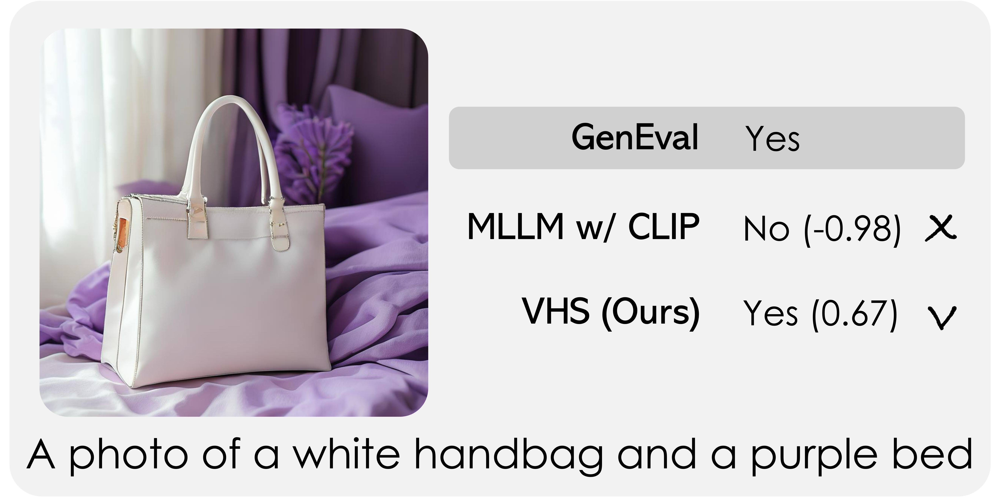
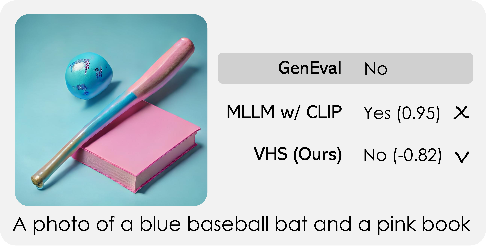
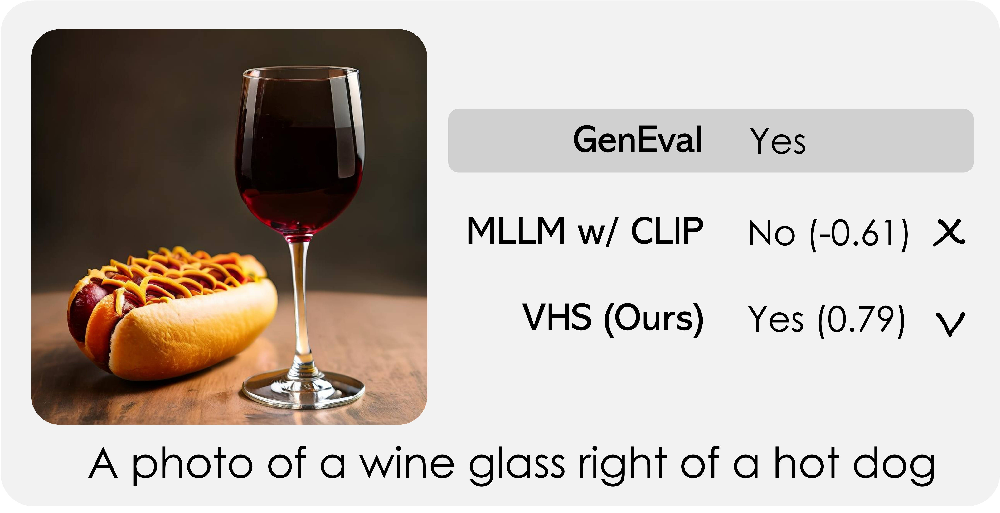

Abstract
Inference-time scaling has emerged as an effective way to improve generative models at test time by using a verifier to score and select candidate outputs. A common choice is to employ Multimodal Large Language Models (MLLMs) as verifiers, which can improve performance but introduce substantial inference-time cost. Indeed, diffusion pipelines operate in an autoencoder latent space to reduce computation, yet MLLM verifiers still require decoding candidates to pixel space and re-encoding them into the visual embedding space, leading to redundant and costly operations.
In this work, we propose Verifier on Hidden States (VHS), a verifier that operates directly on intermediate hidden representations of Diffusion Transformer (DiT) single-step generators. VHS analyzes generator features without decoding to pixel space, thereby reducing the per-candidate verification cost while improving or matching the performance of MLLM-based competitors.
We show that, under tiny inference budgets with only a small number of candidates per prompt, VHS enables more efficient inference-time scaling reducing joint generation-and-verification time by 63.3%, compute FLOPs by 51% and VRAM usage by 14.5% with respect to a standard MLLM verifier, achieving a +2.7% improvement on GenEval at the same inference-time budget.
Verification in Latent Space

Standard MLLM verifiers score a generated image by decoding the latent z₀ to pixel space, then re-encoding it through a visual backbone (e.g., CLIP) before passing it to an LLM. VHS eliminates this pipeline entirely.
Instead, it directly aligns DiT hidden states hℓ* with an LLM input space, allowing it to analyze generator features without decoding to pixel space. This design choice significantly reduces the per-candidate verification cost while improving or matching the performance of MLLM-based competitors.
By accessing hidden states at layer ℓ*, VHS also truncates the generator early, skipping the remaining DiT layers during verification. Only the winning candidate is propagated through the full network to produce the final image.
Alignment
Adapts DiT hidden features to the LLM's input space using re-captioned synthetic image–caption pairs, following the LLaVA training scheme. Only the connector is trained.
Verifier Fine-tuning
Specializes the model on binary (Yes/No) quality labels derived from 118k generated samples categorized by GenEval criteria. Weighted cross-entropy addresses class imbalance.
Qualitative Results
Visual comparison of the best pick images by different verifiers for GenEval-generated images.


Visual comparison of the best pick images by different verifiers for images generated by SANA-Sprint on GenEval prompts. ✓ and × express the alignment with the GenEval verifier.









Quantitative Results
We evaluate on GenEval across three wall-clock budgets. At each budget, VHS evaluates more candidates than MLLM w/ CLIP thanks to its 63.3% lower verification latency. This allows VHS to achieve higher final generation quality, improving GenEval scores by +2.7% at the same time budget.
Key Takeaways
Latent Verifier
VHS directly aligns DiT hidden states hℓ* with an LLM input space, eliminating the pixel-space decode–encode roundtrip entirely.
Wall-Clock Scaling
We define a latency-aware inference-time scaling setting that explicitly measures wall-clock time rather than function evaluations alone.
Thorough Ablations
We study layer depth, LLM backbone, loss function, and training data, exposing key latency–accuracy trade-offs at tiny compute budgets.
BibTeX
@inproceedings{bucciarelli2026vhs,
title = {Tiny Inference-Time Scaling with Latent Verifiers},
author = {Bucciarelli, Davide and Turri, Evelyn and Baraldi, Lorenzo and Cornia, Marcella and Baraldi, Lorenzo and Cucchiara, Rita},
booktitle = {Proceedings of the IEEE/CVF Conference on Computer Vision and Pattern Recognition Findings},
year = {2026}
}